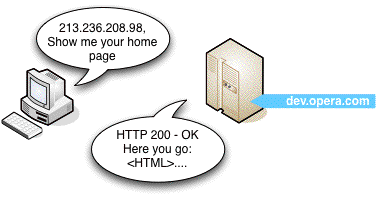

3: How does the Internet work?
11th October 2012: Material moved to webplatform.org
The Opera web standards curriculum has now been moved to the docs section of the W3C webplatform.org site. Go there to find updated versions of these docs, and much more besides!
12th April 2012: This article is obsolete
The web standards curriculum has been donated to the W3C web education community group, to become part of a much bigger educational resource. It is constantly being updated so that it remains current with modern web design practices and technologies. To find the most up-to-date web standards curriculum, visit the web education community group Wiki. Please make changes to this Wiki yourself, or suggest changes to Chris Mills, who is also the chair of the web education community group.
- Previous article—The history of the Internet and the web, and the evolution of web standards
- Next article—The Web standards model—HTML, CSS and JavaScript
- Table of contents
Introduction
Every so often, you get offered a behind-the-scenes look at the cogs and fan belts behind the action. Today’s your lucky day. I’m going to usher you behind the scenes of one of the hottest technologies that you might already be familiar with: the World Wide Web. Cue theme music.
This article covers the underlying technologies that power the World Wide Web:
- Hypertext Markup Language (HTML)
- Hypertext Transfer Protocol (HTTP)
- Domain Name System (DNS)
- Web servers and web browsers
- Static and dynamic content
It’s all pretty fundamental stuff—while most of what’s covered here won’t help you to build a better web site, it will give you the proper language to use when speaking with clients and with others about the web. It’s like a wise nun-turned-nanny once said in The Sound of Music: “When we read we begin with ABC. When we sing we begin with Do Re Mi.”. In this article I will briefly look at how computers actually communicate using HTTP and TCP/IP, then go on to look at the different languages that go together to create the web pages that make up the Internet. The contents of this article are as follows:
- How do computers communicate via the Internet?
- Types of content
- Static vs. dynamic web sites
- Summary
- Exercise questions
How do computers communicate via the Internet?
Thankfully, we have kept things simple for computers. When it comes to the World Wide Web, most pages are written using the same language, HTML, which is passed around using a common protocol—HTTP (hypertext transfer protocol). HTTP is the common internet dialect (specification), allowing for example a Windows machine to sing in harmony with a machine running the latest and greatest version of Linux (Do Re Mi!). Through the use of a web browser—a special piece of software that interprets HTTP and renders HTML into a human-readable form—web pages authored in HTML on any type of computer can be read anywhere, including telephones, PDAs and even popular video game systems.
Even though they’re speaking the same language, the various devices accessing the web need to have some rules in place to be able to talk to one another—it’s like learning to raise your hand to ask a question in class. HTTP lays out these ground rules for the Internet. Because of HTTP, a client machine (like your computer) knows that it has to be the one to initiate a request for a web page from a server. A server is a computer where web sites reside - when you type a web address into your browser, a server receives your request, finds the web page you want, and sends it back to your computer to be displayed in your web browser.
Dissecting a request/response cycle
Now that I’ve looked at all the parts that allow computers to communicate across the Internet, I’ll look at the HTTP request/response cycle in more detail. There are some numbered steps below for you to work along with, so I can demonstrate some of the concepts to you more effectively.
Every request/response starts by typing a Universal Resource Locator (URL) into the address bar of your web browser, something like http://dev.opera.com. Open a browser and do this now.
Now, one thing you may not know is that web browsers actually don’t use URLs to request web sites from servers; they use Internet Protocol or IP addresses (which are basically like phone numbers or postal addresses that identify servers.) For example, the IP address of http://www.apple.com is 17.149.160.10.
Try opening a new browser tab or window, typing http://www.apple.com and hitting enter; then type http://17.149.160.10/ and hit enter—you will get to the same place.
http://www.apple.com is basically acting as an alias for http://17.149.160.10/, but why, and how? This is because people are better at remembering words than long strings of numbers. The system that makes this work is called the Domain name system (DNS), which is essentially a comprehensive automatic directory of all of the machines connected to the Internet. When you punch http://dev.opera.com into your address bar and hit enter, that address is sent off to a name server that tries to associate it to its IP address. There are a ton of machines connected to the Internet, and not every DNS server has a listing for every machine online, so there’s a system in place where your request can get referred on to the right server to fulfill your request.
So the DNS system looks up the www.opera.com web site, finds that it is located at 17.149.160.10, and sends this IP address back to your web browser.
Your machine sends a request to the machine at the IP address specified and waits to get a response back. If all goes well, the server machine sends a short message back to the client with a message saying that everything is okay (see Figure 1,) followed by the web page itself. This type of message is contained in an HTTP header.
Figure 1: In this case, everything is fine, and the server returns the correct web page.
If something goes wrong, for example you typed the URL incorrectly, you’ll get an HTTP error returned to your web browser instead—the infamous 404 “page not found” error is the most common example you’ll come across.
Try typing in http://dev.opera.com/joniscool.html. The page doesn’t exist, so you’ll get a 404 error returned. Try it with a few pages, on different web sites, that don’t exist, and you’ll see a variety of different pages retuned. This is because some web developers have just left the web server to return their default error pages, and others have coded custom error pages to appear when a non-existent page is returned. This is an advanced technique that won’t be covered in this course, but it will hopefully be covered in a separate dev.opera.com article soon.
Lastly, a note about URLs—usually the first URL you go to on a site doesn’t have an actual file name at the end of it (eg http://www.mysite.com/), and then subsequent pages sometimes do and sometimes don’t. You are always accessing actual files, but sometimes the web developer has set up the web server to not display the file names in the URL—this often makes for neater, easier to remember URLs, which leads to a better experience for the user of your web site. We’ll not cover how to do this in this course, as again, it is quite advanced; we cover uploading files to a server and file/folder directory structures in a later article.
Types of Content
Now that I’ve shown you an HTTP request/response, I’ll now turn your attention to the different types of content you’ll expect to see on the Internet. I’ve grouped these into 4 types—plain text, web standards, dynamic web pages, and formats requiring other applications or plugins.
Plain text
In the really early days of the Internet, before any web standards or plugins came along, the Internet was mainly just images and plain text—files with an extension of .txt or similar. When a plain text file is encountered on the Internet, the browser will just display it as is, without any processing involved. You often still get plain text files on university sites.
Web Standards
The basic building blocks of the World Wide Web are the three main web standards—HTML (or XHTML, I’ll use the two interchangeably here for our purposes), CSS and JavaScript.
Hypertext Markup Language is actually a pretty good name as far as communicating it’s purpose. HTML is what’s used to divide up a document, specify its contents and structure, and define the meaning of each part (it’s what contains all the text etc that you see on web sites.) It uses elements to identify the different components of a page.
Cascading Style Sheets give you complete control over how an element is displayed. It’s easy, using style declarations, to change all paragraphs to be double-spaced (line-height: 2em;), or to make all second-level headings green (color: green;). There are a ton of advantages to separating the structure from the formatting, and we’ll look at this in more detail in the next article. To demonstrate the power of HTML and CSS used together, Figure 2 shows some plain HTML on the left, with no formatting added to it at all, while on the right you can exactly the same HTML with some CSS styles applied to it.

Figure 2: Plain HTML on the left, HTML with CSS applied to it on the right.
Finally, JavaScript provides dynamic functions to your web site. You can write small programs in JavaScript that will run on the client computer, requiring no special software to be installed on the server. JavaScript allows you to add some basic functionality and interactivity to your web site, but it has its limitations, which brings us to server-side programming languages, and dynamic web pages.
Dynamic web pages
Sometimes, when browsing the Internet, you’ll come across web pages that don’t have an .html extension—they might have a .php, .asp, .aspx, .jsp, or some other strange extension. These are all examples of dynamic web technologies, which can be used to create web pages that have dynamic sections—code that displays different results depending on values fed to it, eg from a database, form, or other data source. We’ll cover these types of web pages in the Static versus Dynamic pages section below.
Formats requiring other applications or plugins
Because web browsers are only equipped to interpret and display certain technologies like web standards, if you’ve requested a URL that points to either a complex file format, or a web page containing a technology requiring plugins, it will either be downloaded to your computer or opened using the required plugin if the browser has it installed. For example:
If you encounter a Word document, Excel file, PDF, compressed file (ZIP, or SIT for example,) complex image file such as a Photoshop PSD, or another complex file that the browser doesn’t understand, the browser will usually ask you if you want to download or open the file. Both of these usually have similar results, except that the latter will cause the file to be downloaded and then opened by an application that does understand it, if one is installed.
If you encounter a page containing a Flash movie, MP3 or other music format, MPEG or other video format, the browser will play it using an installed plugin, if one has been installed. If not, you will either be given a link to install the required plugin, or the file will download and look for a desktop application to run it.
Of course, there are some gray areas—for example SVG (Scalable Vector Graphics) is a web standard that runs natively in some browsers, such as Opera, but not in others, such as Internet Explorer—IE needs a plugin to understand SVG. A number of browsers will come with some plugins pre-installed, so you may not be aware that content is being displayed via a plugin and not natively within the browser.
Static vs. Dynamic Web Sites
So what are static and dynamic web sites, and what is the difference between the two? Similar to a box of chocolates, it’s all in the filling:
A static web site is a web site where the content, the HTML and graphics, are always static—it is served up to any visitor the same, unless the person who created the web site decides to manually change the copy of it on the server—this is exactly what we’ve been looking at throughout most of this article.
On a dynamic web site on the other hand, the content on the server is the same, but instead of just being HTML, it also contains dynamic code, which may display different data depending on information you feed to the web site. Let’s look at an example—navigate to www.amazon.com in your web browser, and search for 5 different products. Amazon hasn’t sent you 5 different pages; it has sent you the same page 5 times, but with different dynamic information filled in each time. This different information is kept in a database, which pulls up the relevant information when requested, and gives it to the web server to insert in the dynamic page.
Another thing to note is that special software must be installed on the server to create a dynamic web site. Whereas normal static HTML files are saved with a file extension of .html, these files contain special dynamic code in addition to HTML, and are saved with special file extensions to tell the web server that they need extra processing before they are sent to the client (such as having the data inserted from the database)—PHP files for example usually have a .php file extension.
There are many dynamic languages to choose from—I’ve already mentioned PHP, and other examples include Python, Ruby on Rails, ASP.NET and Coldfusion. In the end, all of these languages have pretty much the same capabilities, like talking to databases, validating information entered into forms, etc., but they do things slightly differently, and have some advantages and disadvantages. It all boils down to what suits you best.
We won’t be covering dynamic languages any further in this course, but I have provided a list of resources here in case you want to go and read up on them:
- Rails: Fernandez, Obie. (2007), The Rails Way. Addison-Wesley Professional Ruby Series.
- Rails screencasts
- PHP: Powers, David (2006), PHP Solutions: Dynamic web development made easy, friends of ED.
- PHP Online documentation
- ASP.NET: Lorenz, Patrick. (2003). ASP.NET 2.0 Revealed. Apress.
- ASP.NET: online ASP.NET documentation and tutorials.
Summary
That’s it for the behind-the-scenes tour of how the Internet works. This article really just scratches the surface of a lot of the topics covered, but it is useful as it puts them all in perspective to each other, showing how they all relate and work together. There is still a lot left to learn about the actual language syntax that makes up HTML, CSS and JavaScript, and this is where we’ll go to next—the next article focuses on the HTML, CSS and JavaScript “web standards” model of web development, and takes a look at web page code.
Exercise questions
- Provide a brief definition for HTML and HTTP and explain the difference between the two.
- Explain the function of a web browser.
- Have a look around the Internet for about 5–10 minutes and try to find some different types of content—plain text, images, HTML, dynamic pages such as PHP and .NET (.aspx) pages, PDFs, word documents, Flash movies etc. Access some of these and have a think about how your computer displays them to you.
- What is the difference between a static page and a dynamic page?
- Find a list of HTTP error codes, list 5 of them, and explain what each one means.
- Previous article—The history of the Internet and the web, and the evolution of web standards
- Next article—The Web standards model—HTML, CSS and JavaScript
- Table of contents
Jonathan Lane

Jonathan Lane is the President of Industry Interactive a web development/web application development company located on Mayne Island, British Columbia in Canada. He got his start in development working for the University of Lethbridge Curriculum Re-Development Center as their web projects coordinator for a bunch of years.
He blogs at Flyingtroll and is currently developing Mailmanagr an e-mail interface for the Basecamp project management app.
This article is licensed under a Creative Commons Attribution, Non Commercial - Share Alike 2.5 license.
Comments
The forum archive of this article is still available on My Opera.
-

je suis francophone est ce qu'il y'a un bouton de langue merci
-

Just a nit. Near the end of the page, just before the license paragraph, the badly-formed html elements seem to be duplicated lines that can be deleted.
-

Thanks for the heads up! This has actually occurred because the new dev.opera.com has automatic author bios inserted; previously it didn't do this, and the web standards curriculum was the only set of articles I put bios in. So I have deleted the first instance, and I will have to fix a bug to get HTML elements enabled in the "proper bios"
No new comments accepted.baba hamed ikram razia
Friday, November 25, 2011
tcou
Wednesday, February 22, 2012
Chris Mills
Wednesday, February 22, 2012